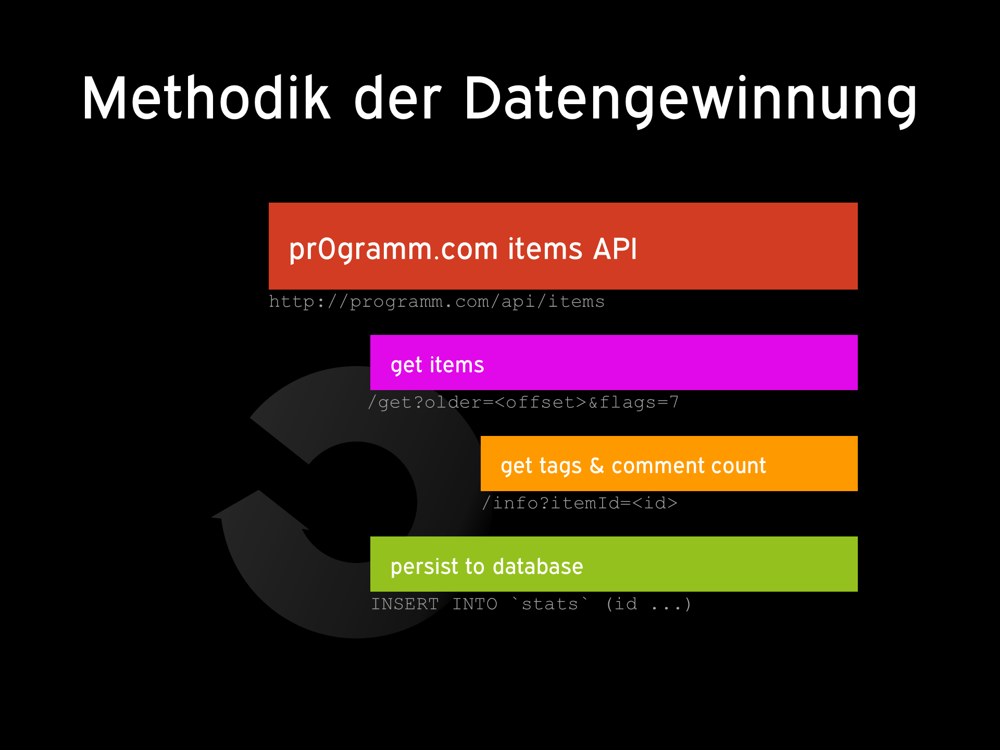

Als großer Freund von faktischen Datensammlungen, sinnvollen Verknüpfungen und ästhetischen Visualisierungen haben wir das Projekt pr0stats gestartet. Ziel ist die Datengewinnung von der pr0gramm Plattform und entsprechende Verarbeitung, Auswertung und Visualisierung der Ergebnisse.
pr0stats ist als digital-kontemporäres Kunstprojekt zu verstehen.
Außerdem könnte sich die Datenbasis sowie die Analysen für weiterführende und intensivere Untersuchungen, z.B. wissenschaftliche Studien (Kulturwissenschaften, Kommunikationswissenschaften, Soziologie, Philosophie), eignen. Das Projekt unterliegt der Unlizenz.
pr0stats steht weder in persönlicher noch in wirtschaftlicher Verbindung mit den Eigentümern oder Betreibern von pr0gramm.com. Das pr0stats-Team wurde weder von pr0gramm beauftragt, noch authorisiert, die Datenbeschaffung und Analysen durchzuführen.
Mit dem pr0stats script werden zunächst Informationen zu Uploads über die pr0gramm.com API abgerufen. Diese Daten werden dann mittels SQL Queries und manueller Aufarbeitung sowie anschließender Visualisierung in wohl konsumierbare Bilder transformiert.
id - ID des pr0gramm-Uploads (http://pr0gramm.com/new/<id>)user - Uploadersf_flag - safe-for-Flag (sfw, nsfw, nsfl)mark - Status des Uploaderspromoted - ID eines beliebten Uploadsup - Anzahl Upvotesdown - Anzahl Downvotescreated - Zeitstempel des Eintragsfullsize - Vollbild-URLsource - externe Quelle (optional)image - relativer Pfad zum Bild/Videothumb - relativer Pfad zum Thumbnailtags - TagsTEXT gespeichert, zukünftig geplant ist, die Tags entsprechend in einer separaten Tabelle zu verwaltencomments - Anzahl der Kommentare